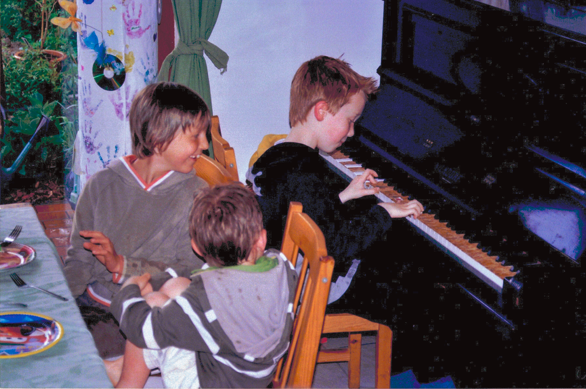
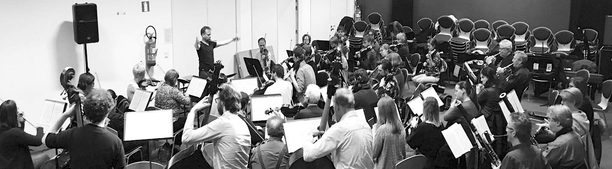

Deze website is mijn portfolio. Hier beantwoord ik een aantal vragen over mezelf en kom je meer te weten over wie ik ben en waarom ik wil beginnen aan deze opleiding. De vragen verschijnen als je met je muis over de witte toetsen heen beweegt. Wanneer je op een toets klikt, zal er een geluid of video afspelen.
Deze website is gemaakt voor grotere schermen. Je kan naar beneden scrollen om de volledige teksten te lezen.
Attesten, Flyers, foto's en opnames zijn beschikbaar bij mijn inzending.
Mijn naam is Tibo De Clercq. Ik ben geboren in 1999 te Leuven en groeide op in het dorp Lubbeek. In mijn vrije tijd speel ik piano (meer informatie hierover volgt). Daarnaast ben ik tot vandaag actief als scoutsleider bij de scouts van Sint-Martinus Lubbeek en heb ik ervaring met het organiseren van evenementen zoals fuiven, eetfestijnen en kampen.
In Januari 2021 studeerde ik af en begon ik te werken als Cloud engineer voor het bedrijf Riskconcile. Dit bedrijf ontwikkelt technologische oplossingen voor de financiële sector (Banken, Hedge Funds, verzekeraars,... ). Ik beveilig en onderhoud hun Cloud infrastructuur.
Weetje over mezelf:
Mijn ouders zijn enorme fans van Arno Hintjens. Bij mijn geboorte hebben ze lang getwijfeld om me te noemen naar deze Belgische zanger.
Op mijn 8 jaar ben ik begonnen met piano te spelen. Ik leerde akkoorden vormen en speelde eenvoudige stukken uit oefenboeken. De eerste muziek dat ik speelde was de filmmuziek van John Williams. Later speelde ik covers van popmuziek en minimalistische pianomuziek in gelijkaardige stijl als die van Philip Glass.
Ik zou mijn verzameling instrumenten willen uitbreiden met een aantal keyboards en synthesizers (Nord Stage 3, Moog Subsequent 37, Teenage engineering OP-1, ...). Jammer genoeg zijn deze instrumenten duur en zijn VST plugins een goed alternatief (Serum, Omnisphere, Kontakt, ...).
Daarnaast heb ik ook een tijd gedraaid op aantal kleine fuiven van mijn scouts. Ik heb geleerd hoe je 2 platen bij elkaar kunt mixen en wat beatmatching is. Zelf ben ik in het bezit van een midi-controller van Native Instruments (S2). De laatste jaren heb ik het DJ'en echter aan de kant gelegd.
Van mijn 7 tot 11 jaar volgende ik notenleer aan de muziekacademie in Lubbeek. Na één jaar noteleer te hebben gevolgd, mocht ik beginnen met een instrument en heb ik gekozen voor piano. In de bijlages vind je een aantal attesten terug.
Rond mijn 15 jaar leerde ik een aantal vrienden kennen die hun eigen muziek maakte en deelde op SoundCloud. Ik kreeg interesse om ook mijn eigen muziek te maken en kocht met wat spaargeld een launchpad (soort drumcomputer). Hierbij kwam een gratis versie van de software Ableton. Vervolgens heb ik op het internet via verschillende blogs en video's geleerd hoe ik mijn eigen "beats" kan maken. Ik leerde over EQ's, FM synthesizers, granular synthesis, reverb, distortion, sidechain, audiocompressie, vocoders, ...
Tot vandaag volg ik wekelijkse pianolessen. De afgelopen 2 jaar volg ik aan de muziekacademie van Tienen les van de pianist Maarten Lingier (zie afbeelding). Maarten is niet alleen een geweldige pianist maar ook een uitstekend goede leerkracht. Samen met hem bestudeerde we harmonisch complexere nummers (waaronder een aantal jazz standards) en leerde hij me verschillende concepten als improvisatie, voicings, modaliteit, comping, polyritmes en akkoordsubstituties.
Op woensdag 2 juni zal ik mijn jaarlijks pianoexamen afleggen in de bachzaal van Tienen.
Er zijn een aantal pianisten en toetsenisten waar ik enorm naar opkijk. Een voorbeeld hiervan is de franse toetseniste Domitille Degalle (DOMi). Samen met de drummer JD Beck vormt ze een jazz duo en speelt ze solo's waar iedereen grote ogen van opzet.
In mijn omgeving zijn er ook aantal producers die mij hebben beïnvloed. Via SoundCloud ontdekte ik het Leuvense platenlabel Tangram Records en leerde ik de producers Sokoto, Poldoore en Moodprint kennen.
Deze kleine lijst is een ingekorte versie van artiesten die ik bewonder.
Pianisten: Maarten Lingier, Duval Timothy, Kiefer, Alexandra Stréliski, Wouter Dewit, Cory Henry, Hania Rani, Ólafur Arnalds, Jean-Michel Blais, DOMi, …
Andere artisten & producers: Bonobo, Mansur Brown, Flying Lotus, Blood Orange, Jacob Collier, Ludwig Göransson, Yussef Dayes, Mike Dean, Steve Reich, Thundercat, Fatima Yamaha, James Blake, Sampha, Kaytranada, Anderson paak.
Radiomakers & DJ's: Lefto (Kiosk, StuBru), Gilles Peterson (BBC, Brownswood Records)
De afgelopen jaren speelde ik de muziek van andere muzikanten en imiteerde ik mijn muzikale idolen. Het doel was om muziek te maken die hetzelfde klikt als die van de artiest zelf. Met sommige resultaten kwam ik in de beurt van het originele werk. Maar dit was nooit beter of hetzelfde als dat van de artiest zelf.
Met deze opleiding wil ik mezelf verdiepen in het schrijven van muziek om op die manier mijn eigen stijl te ontwikkelen. Andere zullen deze muziek misschien wel of niet goed vinden. Maar deze muziek zal mijn eigen orgineel werk zijn.
Vervolgens zou ik willen leren hoe ik deze muziek kan brengen op een podium.
De opleiding muzikant aan de PXL hogeschool lijkt voor mij de ideale manier om te groeien als muzikant alsook om de opgedane kennis en vaardigheden te toetsen aan de praktijk. Ik vind het belangrijk om op een creative manier muziek te maken en niet zo zeer op een "correcte" manier. Tijdens de opleiding wil ik ontdekken wat het is om een muzikant te zijn en wil ik mensen leren kennen die dezelfde passie delen als ik.
Ik maak tijd om nieuwe muziek te ontdekken. Meestal ga ik opzoek via verschillende platformen: Soundcloud, MixCloud, WhoSampled, Kiosk Radio, Boiler Room.
Wanneer ik een nieuwe nummer of artiest ontdek, deel ik deze met vrienden en ga ik vervolgens op zoek naar het verhaal achter die plaat/muzikant. Bijvoorbeeld bij hip hop nummers zoek ik meestal naar de samples die de producers hebben gebruikt. Zo staan producers als Pete Rock, J Dilla en knxwledge bekend voor het hervormen, chopping van samples.
Een van mijn ingezonde covers is een cover van het nummer Stakes is High (De La Soul).
Op youtube volg ik verschilllende kanalen die over muziek praten. Interviews van Nardwuar, reviews van TheNeedleDrop en optredens van opkomende artisten in de COLORS studios.
De corona crisis heeft me ondertussen al langer dan 1 jaar laten zitten met een concert-honger. Het afgelopen jaar heb ik enkel livestreams en opnames kunnen bekijken. Zo zal ik in april een virtueel concert bijwonen van de brusselse rapper Zwangere Guy.
Voor de coronacrisis stelde ik elk semester een lijst samen met optredens in verschillende cultuurcentra's. In deze lijst zitten altijd een paar artiesten die nog onbekend zijn voor mij. Zo ervaar ik muziek op een unieke manier en ontdekte ik muzikanten als Wouter Dewit, Poltrock, Mick Jenkins ...
Ik ben ook het online evenement Vuurdoop bijgewoond. Zo zag ik wet de studenten van de PXL allemaal in petto hebben. Mijn favoriete acts waren Event Horizonen SUNA
Er zijn een aantal artiesten die ik zeker nog live zou willen zien. Als ik ooit de kans krijg zou ik zeker naar een optreden willen gaan van Frank Ocean.
Er zijn een aantal boeken die me hielpen om een beter beeld te vormen over de wereld rond muziek:
74 Creative Strategies for Electronic Music Producers - Dennis DeSantis
Dennis DeSantis schrijft over verschillende strategiën die je kan toepassen tijdens het maken van muziek. Dit boek boek daagde me uit om op een andere manier muziek te maken en spelen.
How Music Works - David Bryne
In dit boek legt David Bryne op basis van zijn eigen ervaringen uit hoe muziek werkt. Hij neemt je mee op reis naar verschillende delen van de wereld en legt je uit hoe muziek zijn vorm krijgt. Dit boek gaf mij verschillende perspectieven over de wereld van en rond muziek.
Twentieth-Century Harmony - Vincent Persichetti
Twentieth-Century Harmony is een boek waarin een aantal moeilijkere onderwerpen worden uitegelegd als harmonische bewegingen, transformaties, atonaliteit, polytonaliteit, chord clusters, ... Ik zal dit boek zeker nog een paar keer moeten lezen voordat ik alles begrijp.
Belpop Bonanza - Jan Delvaux
Dankzij het tv-programma en dit boek leerde ik veel bij over de rijke geschiedenis van de belgische muziek.
Het is moeilijk om deze vraag te beantwoorden omdat er veel muziek is die impact op me heeft gemaakt.
Album: Blonde - Frank ocean
Deze plaat is onverwacht uitgekomen de dag na mijn verjaardag (20 augustus). Hij bracht op 2 dagen 2 platen uit om zo uit een recorddeal te stappen. Wat ik vooral goed vind aan dit album zijn de de samenwerkingen met andere artisten en de vele verrasende momenten doorheen het album. Ik beluisterde dit album voor het eerst pas 2 jaar nadat het was uitgebracht en het is tot vandaag mijn favoriete R&B album.
Artiest: David Bowie
Op jonge leeftijd introduceerde mijn ouders me tot de muziek van Bowie. Pas later begon ik hem te apreciëren en begrijpen. Ik bewonder hem voor zijn bedachtzame songteksten en zijn overgave aan zijn karakters (Ziggy Stardust, Major Tom, ...). David Bowie is misschien een voor de hand liggend antwoord op deze vraag. Maar wanneer je je verdiept in zijn muziek, zie je wat voor een ongelofelijke artiest hij was.
Optreden: Mechels Orkest - Thomas Tooten
Dit was het eerste optreden waar ik naar toe ging. Mijn toenmalige pianoleraar, Thomas Tooten had me uitgenodigd voor het concert. Hij is naast pianist ook een cellist in het Mechelse kamerorkest.
Ja, Ik heb tijdens mijn opleiding toegepaste informatica meerdere web development vakken gevolgd. Deze eenvoudige website heb ik gebouwd met wat html, css en javascript code. Het heeft me toch wat tijd gekost om deze website te bouwen.
Deze website is niet responsive en ziet er het beste uit op grote toestellen.
De code is beschikbaar op mijn Github account @Tibauski of bekijk de broncode in de browser.
Email:
tibo.declercq[at]gmail.com